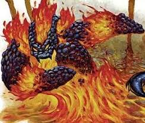

岩浆投掷者(Magma Hurler) CR 3
中型元素(土,跨位面,火)
黑色的烟雾大团从这个似乎完全由火山熔岩构成的生物身上冉冉升起。它的皮肤是坚硬的黑色硬壳,但在它的关节和张开的嘴巴中却都显露着内部放射着红光的熔岩。锯齿状的突起成行排列在它隆起的肩部,向前喷射着烟气。它的手臂末端是近乎勺子般平滑的钩子。

|
生命骰: |
4d8+28(46hp) |
|
先攻: |
+1 |
|
速度: |
20尺(4格) |
|
防御等级: |
15(+1敏捷,+4天生),碰触11,措手不及14 |
|
基本攻击/擒抱: |
+3/+11 |
|
攻击: |
近战 挥击+11(1d6+12) 远程 岩浆岩+5(3d10+8加1d6火焰) |
|
全力攻击: |
近战 挥击+11(1d6+12) 远程 岩浆岩+5(3d10+8加1d6火焰) |
|
面宽/触及: |
5尺/5尺 |
|
特殊攻击: |
岩浆岩 |
|
特殊能力: |
黑暗视觉60尺,元素特性,免疫火焰,易受寒冷伤害 |
|
豁免: |
强韧+11,反射+5,意志+4 |
|
属性: |
力量26,敏捷13,体质24,智力7,感知12,魅力11 |
|
技能: |
聆听+5,侦查+4 |
|
专长: |
钢铁意志,武器专攻(岩浆岩) |
|
地域: |
火元素位面 |
|
组织: |
单独 |
|
挑战等级: |
3 |
|
宝物: |
无 |
|
阵营: |
通常混乱邪恶 |
|
进化: |
5-6HD(中型);7-12HD(大型) |
|
等级调整: |
- |
岩浆投掷者是由炽热的岩石构成的元素生物,是土元素和火元素的结合体。它站立时有6到8尺高重400到500磅。
战斗:
岩浆投掷者的名字得自于它们可以从它们勺子般的手臂中投射出一团由嘴巴吐出的具有毁灭性效果的球状熔岩的能力。它移动缓慢而且智力低下,并且经常会心血来潮的投掷岩浆岩。它不喜欢近战并且会尝试避免那些试图移动过来的战斗。
岩浆岩(Ex):岩浆投掷者可以以一个移动动作将熔岩球吐到手中,速度每轮一次。它可以以30尺的射程增量投掷熔岩球(最高射程150尺)。
元素特性:岩浆投掷者免疫毒素,睡眠效果,麻痹和震慑。它也不会受到重击或夹击。它无法被复苏,复活或是复生(通过有限祈愿术,祈愿术,神迹术或是完全复生术法术可以将其复活)。